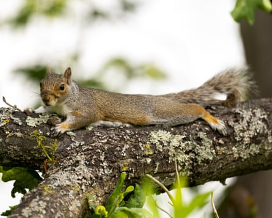
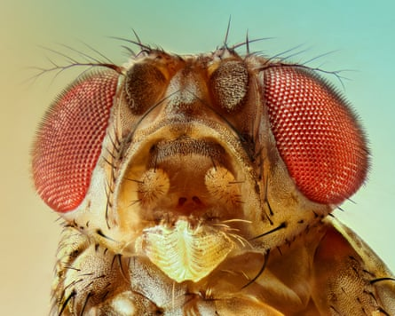
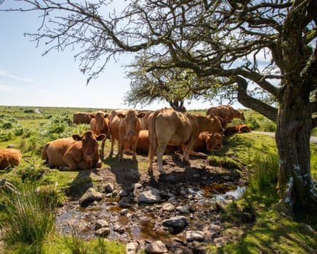
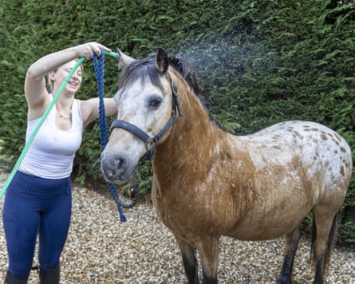
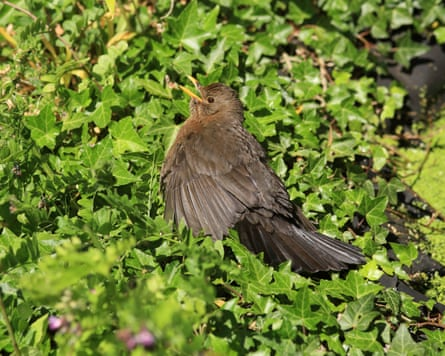
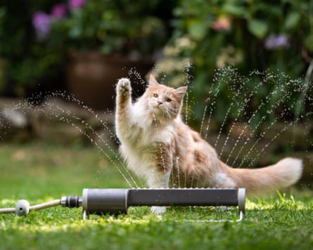

W ith the UK bracing for its third heatwave of the summer, 2025 is on course to be a record-breaking year for temperature. As people retreat into paddling pools and beneath the breeze of pedestal fans, a quieter and less visible struggle is playing out across the country’s fields, forests and hedgerows. So how are Britain’s animals weathering the heat?
From cows and cats to herons, horses and even earthworms, each species has evolved its own tactics for staying cool – some more effective than others. But as extreme heat events become more frequent and intense, scientists are beginning to question the longer-term resilience of UK wildlife, and what we can do to help.
Unlike humans, most species have not evolved the ability to sweat. But dogs pant – as do some birds, including blackbirds. Others, including pigeons and herons, rapidly vibrate the bones and muscles in their throats to expose moist membranes to the air and dissipate heat, a technique called gular fluttering.
Earthworms seek refuge deep underground and “aestivate” – slowing down their metabolisms and sleeping out hot, dry periods. Snails aestivate in their shells. Squirrels “sploot” – splaying themselves out in a pancake posture to dump heat into the ground. And although cats do not sweat through their skin, they can do so through their paw pads – they also lick their paws and fur to enhance cooling.
A squirrel splooting on a branch. This pancake posture is used to dump heat into the ground.Photograph: Jordan Pettitt/PA
Such strategies can be costly though. “Some animals exhibit behaviours like panting when they go into heat stress, which is an important way for the body to try and regulate itself. But if you’re panting, it’s harder to pick up food and feed yourself adequately,” said Prof Alex Thornton at the University of Exeter. “Lots of animals will go and hide in the shade, which might save them from some of the bad effects of the heat, but it also means they’re not out finding food or mates, which can have negative consequences if that heat is prolonged.”
High temperatures also make animals – and humans – temporarily more stupid. “Just as if I asked you to do an exam, and I cranked up the thermostat to 40 degrees, you’d probably do a lot worse than you might otherwise, we find similar sorts of things in animals,” said Thornton. “I’ve been doing work with Australian colleagues on some desert animals, where we can show that even in wild conditions, if they’re heat stressed their cognitive performance really drops. That’s a big problem because animals use their cognitive abilities to deal with environmental change, to track food, and so on.”
High temperatures inhibit the growth of new neurons in a fruit fly’s brain.Photograph: vasekk/Getty Images/iStockphoto
Evidence from laboratory creatures suggests there may be developmental consequences too. For instance, in fruit flies, high temperatures inhibit the growth of new neurons in the brain. “If baby flies grow up under very high heat, they end up with smaller mushroom bodies – the part of the insect brain that controls learning,” said Thornton. In humans too, evidence increasingly suggests that prolonged exposure to temperatures above 30C during pregnancy or early life can affect the growth of foetuses and infants up to the age of two.
In farm animals, prolonged heat stress can reduce their fertility and increase susceptibility to disease. Cattle are particularly affected by heat.
“Our northern European-bred cattle are very happy in cooler temperatures. But when they are hot, we notice this bunching behaviour, where they stand very close together,” said Dr Zoe Barker, an agricultural scientist at the University of Reading.
One theory is that bunching in the shade helps them to stay cool – but indoor-housed cattle do it too. Another is that they are bunching towards better ventilation or trying to protect themselves from flies. Alternatively, “they could have got so stressed, that their herd instinct is to bunch together”, said Barker.
She and colleagues at the universities of Essex, Cardiff and Anglia Ruskin are studying this phenomenon, because it does not seem to be very good for cattle. “When they bunch, the individual animals get warmer because you’ve got these massive radiators sticking themselves next to one another, and they create a lot of moisture,” said Barker.
Cows finding shade beneath a tree on Dartmoor. Scientists are yet to discover why they bunch in heat.Photograph: Paul Mansfield Photography/Getty Images
“Because they don’t use the barn area fully, the areas that they lie in can become wetter and dirtier, which increases their chance of getting mastitis [an udder infection]. They also spend more time standing, which has consequences for their feet, legs and lameness scores.”
So far, the researchers have learned that bunching in barn-housed dairy herds starts to occur once the hourly ambient temperature rises above about 20C (68F).
The most productive cows are often worst affected by high temperatures, because milk production is a metabolically intense process that generates body heat. Prolonged heatwaves can reduce their milk yield, with economic consequences for farmers.
Other large mammals also suffer in the heat. “A horse is six- to seven-times heavier than a human, but only has two times more skin surface, so it has a lower surface area to exchange heat into the environment. This means they can accumulate temperature quite quickly, particularly when exercising,” said Dr Roberta Blake, a veterinary surgeon and animal biomechanics expert at Anglia Ruskin in Writtle, Essex.
Although horses can sweat to cool down, this is not always enough. A quirky, yet serious, sign of an excessively hot horse is “thumps” – the equine equivalent of hiccups – thought to be triggered by an electrolyte imbalance. If a horse is exhibiting this or other signs of heatstroke, dousing them in cool water is the best approach.
Dousing a horse in cool water can help them avoid heatstroke.Photograph: David Hartley/Shutterstock
With extreme heat events predicted to become more common as the century progresses, agricultural scientists are increasingly turning their minds to how to mitigate its effects, for example through improved building design.
Helping wild animal populations will be harder, and there could be more mass casualty events as a result, such as swifts falling from the sky , as they did during the May 2022 heatwave, or the deaths of large numbers of fish in oceans, lakes or rivers.
But there are simple ways to help garden wildlife. Leaving patches of long grass and flowers offers shade and shelter, while a bird bath provides vital water. “Providing food has pros and cons, but we know that animals may find it more difficult to find enough food when it’s really hot, so there might be circumstances where it’s useful, such as providing bird feeders, and so on,” said Thornton.
As heatwaves intensify, the fate of Britain’s wildlife may depend not just on their instincts, but on our willingness to step in and help.
A female blackbird spreading its wings and gular fluttering to keep cool.Photograph: Robert Macdonald/Alamy
Sunscreen for cats and other ways to help pets beat the heat
If you are slathering sunscreen on your own nose and ears, spare a thought for sun-loving pets. The RSPCA is urging cat owners to use pet-safe, waterproof SPF30+ on ear tips, noses and other areas with thin or no fur.
Cats, like humans, can develop skin cancer – sometimes requiring surgery. Horses with white markings, and light-skinned or thin-coated dogs are also at risk.
Avoid sunscreens with zinc oxide or salicylates, which are toxic to cats. And while unscented children’s sunscreens may be acceptable alternatives to pet-specific formulations, always check with a vet first.
Other strategies to keep pets safe include providing plenty of water, shade, and time indoors during peak heat (usually 10am to 3pm). A parasol or draped sheet can offer shade in bare gardens.
Owners are urged to apply pet-safe sunscreen to their cats.Photograph: Nils Jacobi/Getty Images/iStockphoto
Cats can be fussy about water placement. “Owners often put food and water bowls next to each other, because that’s how people eat and drink – but cats like to eat and drink in separate locations,” said Nicky Trevorrow, the senior behaviour manager at Cats Protection. “We think it goes back to African wildcat behaviour, and not wanting to contaminate their water source with the gut contents of their prey.”
Many also prefer to drink with their backs to a wall, and favour wide, shallow bowls to avoid whisker contact, and glass or ceramic bowls over plastic or metal, which can alter the taste.
To keep pets cool, try placing a frozen water bottle wrapped in a towel near their bed, and use a quiet fan to improve airflow.
Pets with dirty rear ends are at risk of flystrike – a painful, sometimes fatal condition where maggots hatch and eat flesh. But even clean pets are not immune. In warm weather, the RSPCA advises twice-daily checks for illness or injury, daily cleaning of toilet areas, and keeping rear ends clean and dry.